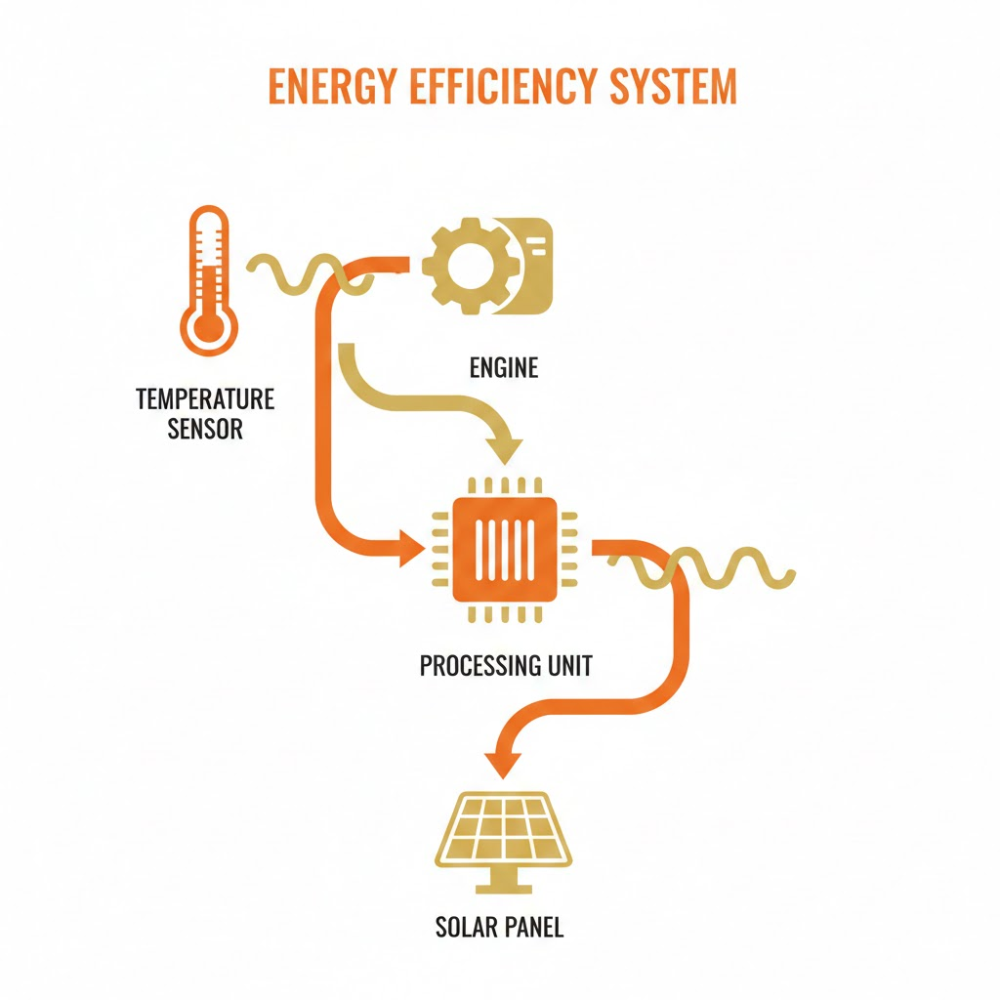
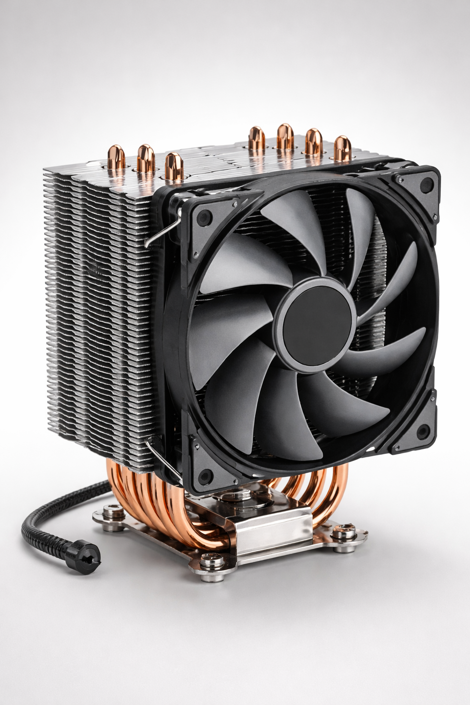
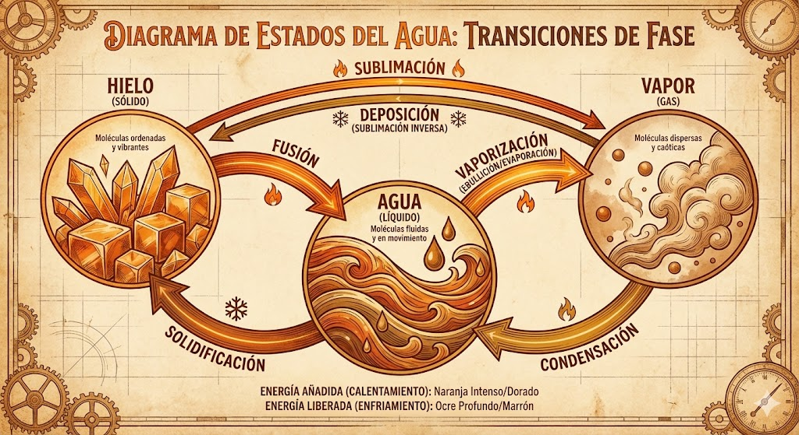
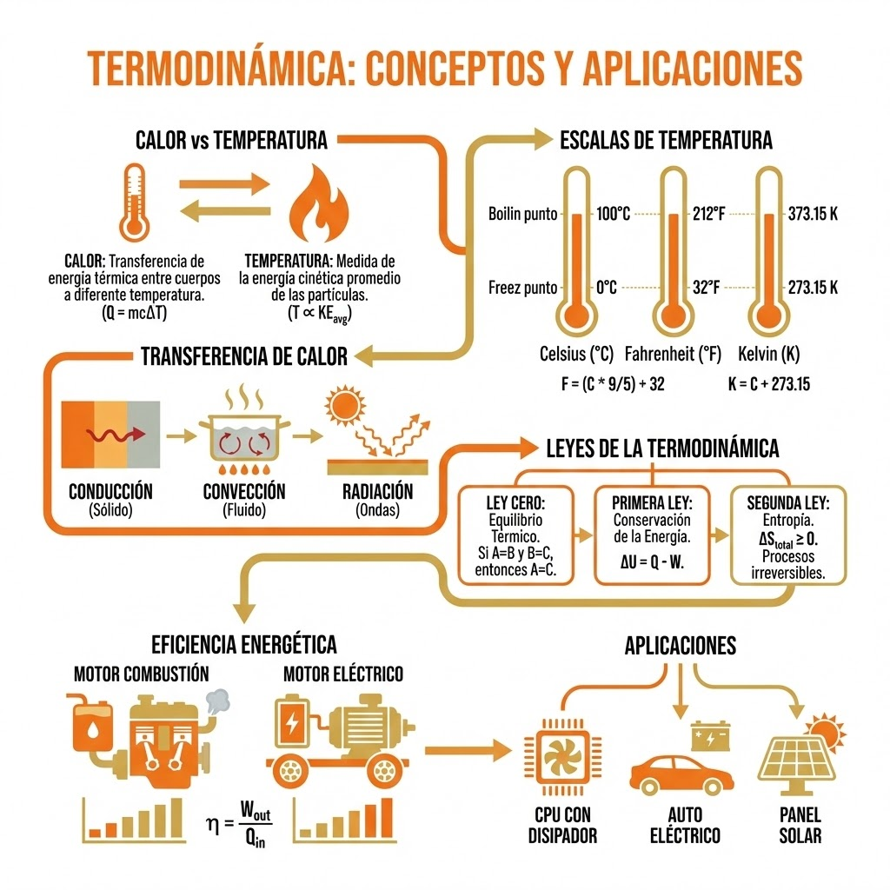

Explora los principios de la Termodinamica y su aplicacion en la gestion eficiente de la energia,
desde el calor en los motores de combustion hasta la refrigeracion de procesadores (CPU).
Indice de Contenidos
Unidad 2: Termodinamica y Gestion Energetica
Del calor molecular a la eficiencia de los sistemas modernos
Objetivo
Competencias a desarrollar en esta unidad
Conceptos Fundamentales
Calor, temperatura, escalas y dilatacion
Propagacion del Calor
Conduccion, conveccion y radiacion
Calorimetria
Capacidad calorifica y calor especifico
Cambios de Fase
Calor latente de fusion y vaporizacion
Leyes de la Termodinamica
Ley Cero, Primera y Segunda Ley
Aplicaciones Modernas
Motores, eficiencia y efecto invernadero
Procedimientos
Experimento de calorimetria
Practicas Integradoras
Ejercicios aplicados
Reto Digital
Diseno de refrigerador pasivo
Recursos
Material complementario
UNIDAD 2Termodinamica y Gestion Energetica2
Objetivo de la Unidad
Objetivo
En esta unidad exploraremos los principios de la Termodinamica y su aplicacion en la
gestion eficiente de la energia, desde el calor en los motores de combustion hasta la
refrigeracion de procesadores (CPU).
Al finalizar, seras capaz de:
Diferenciar calor y temperatura, comprendiendo su naturaleza y unidades de medida.
Manejar escalas termometricas (Celsius, Fahrenheit, Kelvin) y convertir valores entre
ellas.
Explicar la dilatacion termica en solidos, liquidos y gases, y sus implicaciones
practicas (ej. dilatacion en puentes y componentes electronicos).
Describir los mecanismos de transferencia de calor: conduccion, conveccion y radiacion,
identificando ejemplos cotidianos de cada uno.
Aplicar conceptos de calorimetria, incluyendo capacidad calorifica, calor especifico y
calor latente, para resolver problemas.
Enunciar y aplicar las Leyes de la Termodinamica (Ley Cero, Primera y Segunda),
comprendiendo sus implicaciones.
Relacionar la teoria con aplicaciones modernas, evaluando la eficiencia energetica en
tecnologias actuales.

UNIDAD 2Termodinamica y Gestion Energetica3
Conceptos Fundamentales
Fundamentos teoricos de la termodinamica: calor, temperatura y sus diferencias esenciales.
Calor vs. Temperatura
Temperatura y calor son conceptos relacionados pero distintos. La
temperatura es una medida de la energia cinetica promedio de las moleculas de un cuerpo -
esencialmente que tan caliente esta.
En cambio, el calor es energia termica en transito: energia que se transfiere de un cuerpo a
otro debido a una diferencia de temperatura. Un objeto no "posee" calor; mas bien gana o pierde
calor cuando hay intercambio energetico con su entorno.
Comparativa: Calor vs Temperatura
Temperatura
Energia cinetica promedio molecular
Magnitud de estado
Se mide en: °C, K, °F
Un objeto "tiene" temperatura
Calor
Energia termica en transito
Magnitud de proceso
Se mide en: Joules (J), calorias
Un objeto "gana o pierde" calor
Nota Destacada
El calor se mide en unidades de energia (joules en el SI, o calorias tradicionalmente), mientras que
la temperatura se mide en grados. Durante cambios de fase (como fusion o
ebullicion) una sustancia puede absorber gran cantidad de calor sin cambiar su temperatura
- esa energia se invierte en romper enlaces, fenomeno conocido como calor latente.
Ejemplo: Si se coloca en contacto un bloque caliente con uno frio, el calor fluira
espontaneamente del caliente al frio hasta que ambos alcancen la misma temperatura (equilibrio termico). La
temperatura final sera intermedia, reflejando la nueva energia cinetica promedio comun.
UNIDAD 2Termodinamica y Gestion Energetica4
Escalas Termometricas (°C, °F, K)
Existen distintas escalas de temperatura:
Escala
Punto de Congelacion (Agua)
Punto de Ebullicion (Agua)
Cero Absoluto
Celsius (°C)
0 °C
100 °C
-273.15 °C
Fahrenheit (°F)
32 °F
212 °F
-459.67 °F
Kelvin (K)
273.15 K
373.15 K
0 K
Formulas de Conversion
T(K) = T(°C) + 273.15 | T(°F) = 1.8 × T(°C) + 32
Una diferencia de 1 °C equivale a 1.8 °F y a 1 K
La escala Kelvin (K) fija su cero en el cero absoluto (0 K), la temperatura
mas baja fisicamente posible, donde la energia cinetica molecular es minima. Los incrementos son
equivalentes a los de Celsius.
Curiosidad
La temperatura mas baja alcanzada experimentalmente esta del orden de nanokelvins
sobre el cero absoluto, en condensados Bose-Einstein. En contraste, la temperatura mas alta
registrada en laboratorio supera los billones de kelvins (en colisionadores de
particulas). Dato curioso: -40 °C = -40 °F (coinciden ambas escalas).
Dilatacion Termica
La mayoria de los materiales se expanden al calentarse y se contraen al enfriarse. Este
cambio de tamano con la temperatura se cuantifica mediante el coeficiente de dilatacion
termica.
Dilatacion Lineal
ΔL = α × L × ΔT
α = coeficiente de dilatacion lineal | L = longitud inicial | ΔT = cambio de
temperatura
Ejemplo: Una viga de acero de 10 m con α ≈ 12×10⁻⁶/°C se alargara unos ~3.6 mm si su
temperatura sube 30 °C.
UNIDAD 2Termodinamica y Gestion Energetica5
Aplicaciones de la Dilatacion Termica
Las juntas de expansion se instalan en puentes para absorber el alargamiento termico de los
materiales. Sin ellas, el aumento de longitud al calentarse generaria esfuerzos mecanicos enormes que
podrian agrietar la estructura. En las vias de ferrocarril tambien se dejan pequenos espacios entre rieles
para evitar pandeos en dias calurosos.
Enfoque Albatros Tech: Estres Termico en Electronica
En los circuitos electronicos, componentes distintos (chips de silicio, soldaduras de estano, placas
de fibra de vidrio) tienen coeficientes de dilatacion diferentes.
Cuando un dispositivo se calienta y enfria repetidamente (ciclo de encendido/apagado de una CPU),
cada material se expande o contrae en distinta magnitud. Estas tensiones
termomecanicas pueden deformar y hasta fisurar las soldaduras, causando fallas.
Solucion: Los ingenieros utilizan soldaduras flexibles y empaques con almohadillas
termicas para acomodar estas dilataciones sin romper conexiones.
Material
Coeficiente α (×10⁻⁶/°C)
Aplicacion
Aluminio
24
Disipadores, cables
Acero
12
Estructuras, rieles
Vidrio comun
9
Ventanas
Vidrio Pyrex
3
Utensilios de cocina
Silicio
2.6
Chips semiconductores
UNIDAD 2Termodinamica y Gestion Energetica6
Propagacion del Calor: Conduccion, Conveccion y Radiacion
Cuando existe una diferencia de temperatura, el calor puede transferirse de tres formas
basicas:
1
Conduccion
Transferencia de energia por contacto directo, sin movimiento neto de materia. Las
moleculas mas calientes vibran intensamente y transfieren parte de su energia a sus vecinas mas
frias. Ocurre principalmente en solidos.
Ejemplo: Una cuchara metalica que se calienta desde la punta sumergida en te caliente hasta el
mango.
2
Conveccion
Transferencia de calor mediante el movimiento de un fluido (liquido o gas) que
transporta energia. Al calentarse, un fluido suele dilatarse, volviendose menos denso y ascendiendo,
mientras el fluido mas frio desciende.
Ejemplo: Hervir agua en una olla - el liquido cercano a la llama sube mientras el agua fria
desciende.
3
Radiacion
Transferencia de energia mediante ondas electromagneticas (principalmente
infrarrojas). No requiere medio material: puede viajar por el vacio. La potencia emitida crece con
T⁴ (ley de Stefan-Boltzmann).
Ejemplo: El Sol nos entrega calor a 150 millones de km de distancia.
Mecanismo
¿Como ocurre?
Ejemplo cotidiano
Conduccion
Atomos transmiten energia a vecinas por contacto directo
La base de una olla calienta el mango metalico
Conveccion
Un fluido mueve calor al desplazarse masas calientes y frias
El aire caliente sube sobre un radiador
Radiacion
Emision de energia electromagnetica desde la superficie
Los rayos del sol calientan tu cara
UNIDAD 2Termodinamica y Gestion Energetica7
Enfoque Albatros Tech: Diseno de Disipadores de Calor (Heat Sinks)
Los disipadores son dispositivos (generalmente de aluminio o cobre) con aletas que
incrementan la superficie para disipar mejor el calor de componentes electronicos potentes (CPU,
GPU, transistores de potencia).
Proceso de Disipacion:
Conduccion: El calor fluye desde la CPU hacia la base del disipador
(pasta termica elimina bolsas de aire)
Conveccion: El calor se entrega al aire a traves de las aletas
Radiacion: Una pequena parte se emite desde las superficies
Tipos de Conveccion:
Natural: El aire caliente asciende por entre las aletas
Forzada: Un ventilador impulsa aire fresco a traves del disipador

En la imagen se ve un disipador de aluminio con aletas y heat pipes de cobre, junto a un ventilador. El calor
de la CPU se conduce a traves de la base de cobre y los heat pipes hacia las aletas, donde el flujo de aire
forzado por el ventilador lo disipa al ambiente.
Heat Pipes (Tubos de Calor): Son tubos sellados con un fluido interno que al calentarse
en un extremo se evapora y viaja al otro extremo, donde cede calor y condensa, regresando por
capilaridad. Transfieren calor con alta eficiencia combinando conduccion + cambio de fase + conveccion
interna.
UNIDAD 2Termodinamica y Gestion Energetica8
Calorimetria: Capacidad Calorifica y Calor Especifico
Calorimetria es la rama de la fisica que estudia la transferencia de calor entre cuerpos. Un
concepto clave es el calor especifico (c): el calor necesario para elevar en 1 °C la
temperatura de 1 kg de sustancia.
Formula Fundamental de la Calorimetria
Q = m × c × ΔT
Q = calor (J) | m = masa (kg) | c = calor especifico (J/kg·K) | ΔT = cambio de
temperatura
Sustancia
Calor Especifico c (J/kg·K)
Caracteristica
Agua
4,180
Muy alto - regula el clima
Aceite
~2,000
Medio
Arena
~800
Bajo
Hierro
~450
Bajo
Cobre
~385
Muy bajo
Ejemplo Practico
Si sumergimos un bloque de 0.5 kg de hierro a 300 °C en 1 kg de agua a 20 °C dentro de un calorimetro
aislado, la temperatura final quedara mucho mas cerca de 20 °C que de 300 °C. Esto ocurre porque el
agua (mayor capacidad calorifica) domina el intercambio: puede absorber mucha mas energia por cada
grado que cambia.
Calorias y Joules
Historicamente, la energia termica se midio en calorias. Una caloria (1 cal) es el calor
necesario para elevar en 1 °C la temperatura de 1 g de agua.
Equivalencia: 1 cal = 4.1868 J | 1 kcal ≈ 4,184 J
UNIDAD 2Termodinamica y Gestion Energetica9
Calor Latente y Cambios de Fase
Cuando un material cambia de estado (solido ↔ liquido ↔ gas), absorbe o libera energia
sin cambiar de temperatura durante la transicion. A esta energia se le llama calor
latente.
Calor Latente
Q = m × L
Lf = calor latente de fusion | Lv = calor latente de
vaporizacion
Fusion (Solido → Liquido)
Agua: Lf ≈ 334,000 J/kg
El hielo a 0 °C necesita absorber esta energia para convertirse en agua liquida a 0 °C, sin
elevar su temperatura.
Vaporizacion (Liquido → Gas)
Agua: Lv ≈ 2,260,000 J/kg
Evaporar 1 kg de agua a 100 °C requiere muchisima mas energia que calentarla de 0 a 100 °C.
Aplicaciones
Sudor: Cuando el agua de la piel se evapora, toma calor de nuestro cuerpo
(enfriandonos) para cambiar de liquido a vapor.
Hielo en bebidas: Absorbe calor latente al derretirse, enfriando la bebida sin
bajar de 0 °C.
Refrigeracion por evaporacion: Los coolers evaporativos usan este principio en
climas secos.

UNIDAD 2Termodinamica y Gestion Energetica10
Leyes de la Termodinamica
0
Ley Cero
Equilibrio Termico: "Si dos sistemas A y B estan por separado en equilibrio termico
con un tercer sistema C, entonces A y B estan en equilibrio termico entre si".
Esto significa que comparten la misma temperatura. Es una ley "cero" porque conceptualmente precede a
las demas: nos permite definir la temperatura y usar termometros.
1
Primera Ley
Conservacion de la Energia: La energia interna (U) de un sistema puede cambiar
mediante transferencia de calor (Q) o realizacion de trabajo (W).
Primera Ley de la Termodinamica
ΔU = Q - W
Q = calor suministrado al sistema | W = trabajo realizado por el sistema
La energia que entra en forma de calor se usa en aumentar la energia interna o en hacer trabajo, pero la
energia total se conserva. No es posible crear o destruir energia de la nada.
Nota Destacada
"La energia no puede crearse ni destruirse, solo transformarse" - Primera Ley de la
Termodinamica. Todo balance energetico debe cerrar contabilizando calor, trabajo y cambios de
energia interna.
Ejemplo: Motor de Combustion Interna
La mezcla de combustible y aire al quemarse libera energia quimica en forma de calor Q. Parte se convierte en
trabajo mecanico W (empujando los pistones) y el resto se queda como energia interna en los gases de escape
calientes o en el motor (debe disiparse por el radiador).
UNIDAD 2Termodinamica y Gestion Energetica11
2
Segunda Ley
Entropia y Eficiencia: "Es imposible construir una maquina termica que, operando en
un ciclo, convierta todo el calor absorbido en trabajo". Siempre habra calor que no se puede
convertir en trabajo util.
La entropia (S) es una medida del "desorden" o dispersion de la energia. En cualquier
proceso real, la entropia total del sistema + entorno nunca disminuye.
Eficiencia de Carnot (Maxima Teorica)
ηCarnot = 1 - Tfria/Tcaliente
Temperaturas en Kelvin | Ningun motor real superara esta eficiencia
Implicaciones de la Segunda Ley
El calor fluye espontaneamente de caliente a frio, nunca al reves de forma espontanea.
Existe un limite teorico de eficiencia para las maquinas termicas.
No existe maquina 100% eficiente (adios al motor de movimiento perpetuo).
La entropia del universo aumenta hacia un estado de equilibrio maximo (maximo desorden).
Eficiencia Energetica Moderna
Motor de Combustion
Eficiencia: 20-40%
Pierde 60-70% como calor
Limitado por ciclo de Carnot
Emite CO₂, NOₓ
Motor Electrico
Eficiencia: 85-95%
No opera con ciclo termico
No limitado por Carnot
Sin emisiones locales
UNIDAD 2Termodinamica y Gestion Energetica12
Dialogo Cientifico Simulado: Sadi Carnot y Nikola Tesla
Encuentro imaginario entre Sadi Carnot (ingeniero frances pionero de la termodinamica) y Nikola Tesla
(inventor y promotor de la energia electrica) en un cafe, discutiendo motores.
Carnot: Senor Tesla, he deducido que ningun motor termico puede
convertir todo el calor en trabajo; siempre hay perdidas. Mi ciclo ideal es el mejor posible, pero
incluso asi, un motor con vapor a 600 K y ambiente a 300 K apenas ronda un 50% de eficiencia teorica.
Tesla: Fascinante, ingeniero Carnot. Yo he dedicado mi vida a los
motores electricos de corriente alterna. No queman combustible internamente, por lo que evitamos ese
ciclo calor-trabajo limitado. De hecho, mis motores convierten alrededor del 90% de la energia electrica
en movimiento util.
Carnot: ¡90%! Eso suena milagroso desde la perspectiva de un
motor termico. ¿Como es posible?
Tesla: La electricidad ya es energia "ordenada". Un motor
electrico simplemente la canaliza hacia trabajo mecanico con poca disipacion. Claro, hay que contar las
perdidas de generar y transportar la electricidad...
Carnot: El Segundo Principio siempre manda: en algun lugar del
proceso la entropia aumenta. Pero es cierto que al llevar la energia como electricidad hasta el punto de
uso, el vehiculo ya no tiene que desperdiciarla en calor.
Tesla: Vuestro trabajo fue visionario. Incluso en nuestros
tiempos usamos la nocion de eficiencia de Carnot para mejorar las centrales electricas. La termodinamica
clasica y la ingenieria electrica, juntas, nos permiten aspirar a un sistema de transporte mas eficiente
y limpio.
Reflexion
En el dialogo se aprecia que los motores termicos estan fundamentalmente limitados
por la segunda ley, mientras que los motores electricos logran eficiencias mayores
porque la conversion de energia electrica a mecanica implica menos aumento de entropia durante el
uso.
UNIDAD 2Termodinamica y Gestion Energetica13
Aplicaciones Modernas: Eficiencia Energetica
Efecto Invernadero
La fisica de la atmosfera es un ejemplo de termodinamica a escala planetaria. La Tierra recibe radiacion
solar; la superficie emite radiacion infrarroja. Ciertos gases (vapor de agua, CO₂, metano) absorben
gran parte de esa radiacion y la reirradian, atrapando calor.
El efecto invernadero natural eleva la temperatura media global ~33 °C por encima de lo
que seria sin atmosfera (de -18 °C a +15 °C). Sin el, la Tierra seria inhabitable.
El problema es que las actividades humanas estan intensificando este efecto al elevar la
concentracion de gases de efecto invernadero (GEI). Mas GEI = menos radiacion escapa al espacio = mas
calentamiento global.
Gestion Termica en Electronica
En dispositivos modernos (CPU, GPU, baterias) la gestion del calor es crucial. Un procesador de alto
rendimiento puede disipar 100+ W en pocos cm² - sin buena refrigeracion se quemaria
rapidamente.
Soluciones de Gestion Termica
Disipadores con aletas: Aumentan superficie de transferencia
Heat pipes: Conduccion + cambio de fase
Refrigeracion liquida: Circuito cerrado con bomba y radiador
Pasta termica: Elimina bolsas de aire entre CPU y disipador
Throttling: Reduccion automatica de velocidad si se calienta demasiado
UNIDAD 2Termodinamica y Gestion Energetica14
Procedimientos
Experimento: Determinacion del Calor Especifico de un Metal por Calorimetria
Objetivo: Medir el calor especifico desconocido de un metal (ej. aluminio) utilizando un
calorimetro simple y el principio de equilibrio termico.
Materiales
Calorimetro de mezcla (o dos vasos de poliestireno con tapa)
Termometro (rango ambiente a 100 °C)
Balanza (precision ±0.1 g)
Muestra de metal (~100 g)
Agua y mechero o fuente de agua hirviendo
Preparacion de la muestra metalica
Pesa la muestra de metal (mmetal). Calientala en agua hirviendo hasta ~100 °C.
Preparacion del calorimetro
Coloca una cantidad conocida de agua (ej. 200 g) en el calorimetro. Anota magua.
Temperatura inicial
Mide la temperatura inicial del agua Ti,agua (ej. ~20 °C).
Transferencia
Transfiere rapidamente el metal caliente al calorimetro. Tapa y agita suavemente.
Lectura de equilibrio
Registra la temperatura maxima alcanzada Tf (temperatura de equilibrio).
UNIDAD 2Termodinamica y Gestion Energetica15
Calculo del Calor Especifico
Aplicando conservacion de la energia (calor cedido = calor absorbido):
Este experimento demuestra el principio de equilibrio termico y permite medir una
propiedad caracteristica del material (su calor especifico) aplicando directamente la
Primera Ley (conservacion de la energia). El metal y el agua llegan a la misma
temperatura final, pero la cantidad de calor cedida por uno es igual a la ganada por el otro.
Fuentes de error: Perdidas de calor al ambiente, calor absorbido por el recipiente,
termometro no leido en el instante correcto. Un buen calorimetro deberia darte un valor cercano al
teorico (dentro de 5-10% de error).
UNIDAD 2Termodinamica y Gestion Energetica16
Infografia
Resumen visual de los conceptos clave de Termodinamica y Gestion Energetica

UNIDAD 2Termodinamica y Gestion Energetica17
Conclusion
Sintesis de los conocimientos adquiridos y su relevancia en el mundo actual.
En esta unidad, hemos construido una comprension integrada de la termodinamica clasica y su
importancia practica.
Lo que aprendimos:
Diferenciamos calor y temperatura - el calor es energia en transito, no algo contenido.
Exploramos como medimos la temperatura en diferentes escalas.
Estudiamos como los materiales responden al calor expandiendose.
Analizamos como viaja la energia termica: conduccion, conveccion y radiacion.
Aplicamos la calorimetria para predecir temperaturas de equilibrio.
Comprendimos el calor latente en transiciones de fase.
Afianzamos los principios de las Leyes de la Termodinamica.
Conexion con el mundo actual:
Entendemos por que un coche electrico es mas eficiente que uno de gasolina; como el mismo
principio que limita la eficiencia de un motor explica el calentamiento global; como la
gestion termica es crucial en tecnologia de punta (refrigeracion de CPUs, conservacion de energia en
edificios).
Sintesis Final
La gestion energetica se basa en aplicar inteligentemente la termodinamica: aumentar
eficiencias para requerir menos energia, aprovechar mejor la energia disponible y minimizar la
disipacion inutil. La termodinamica nos brinda tanto leyes universales (que ningun
invento puede violar) como herramientas de analisis para innovar dentro de esos
limites.
UNIDAD 2Termodinamica y Gestion Energetica18
Profesionales con Valor
Cientificos e ingenieros cuyo aporte a la termodinamica tiene gran valor en nuestra sociedad.
Sadi Carnot (1796-1832)
Considerado el "padre" de la termodinamica. Analizo el rendimiento de los motores de vapor y establecio el
concepto de ciclo de Carnot y eficiencia maxima teorica, sentando la Segunda Ley antes de
que se formulara formalmente.
James Prescott Joule (1818-1889)
Fisico ingles que demostro la equivalencia entre trabajo mecanico y calor. Sus hallazgos
consolidaron la Primera Ley. La unidad de energia (joule) lleva su nombre.
Emily Warren Roebling (1843-1903)
Ingeniera "de facto" del Puente de Brooklyn. Lidio con desafios termodinamicos indirectos:
dilatacion termica de cables, resistencia de materiales a cambios de temperatura. Un ejemplo de como
integrar teoria y practica.
Ingenieros en Energia y Medio Ambiente (Siglo XXI)
Hoy, profesionales multidisciplinarios trabajan para mejorar la eficiencia energetica: ingenieros mecanicos
disenan turbinas eficientes, ingenieros quimicos desarrollan procesos con recuperacion de calor, cientificos
atmosfericos como Dr. Syukuro Manabe (Premio Nobel 2021) integran principios termodinamicos
en modelos climaticos.
Tu turno: La formacion en estos conceptos te permitira unirte a ese extenso equipo de
mentes que entienden y aplican las leyes del calor para crear un mundo mejor. ¡La siguiente persona con
valor podrias ser tu!
UNIDAD 2Termodinamica y Gestion Energetica19
Practicas Integradoras
Ejercicios que combinan varios conceptos de la unidad para poner a prueba lo aprendido.
1
Mezcla de Liquidos a Distintas Temperaturas
Tienes 2 kg de agua a 80 °C y 3 kg de agua a 20 °C. Los mezclas en un recipiente aislado.
a) ¿Que temperatura final esperas?
b) ¿Cuanto calor cedio el agua caliente y cuanto gano la fria?
c) Si en lugar de agua fria fuera aceite (3 kg a 20 °C, con c ≈ 2000 J/kg·K),
¿seria la temperatura final mas alta o mas baja?
2
Diseno de Junta de Expansion
Una viga de acero de 15 m a 10 °C puede alcanzar 40 °C en verano (α = 12×10⁻⁶/°C).
a) ¿En cuanto se alarga?
b) Si el puente tiene tramos de 30 m, ¿de que tamano minimo debe ser la junta?
c) ¿Que podria suceder si la junta es insuficiente?
UNIDAD 2Termodinamica y Gestion Energetica20
3
Analisis de Ciclo de Motor Ideal
Un motor termico opera entre 600 K y 300 K.
a) ¿Cual es la eficiencia de Carnot teorica maxima?
b) Si absorbe 500 J de calor, ¿cual es el trabajo maximo que podria entregar?
c) Un motor real tiene 30% de eficiencia. ¿Cuanto trabajo entrega por 500 J? ¿Es
violada la 2ª Ley?
4
Refrigerador Domestico Abierto
Un refrigerador esta encendido dentro de una cocina aislada.
a) Si se deja la puerta abierta, ¿que sucede con la temperatura de la cocina?
Explica usando la primera y segunda ley.
b) ¿Y si en cambio colocas una bolsa de hielo? Analiza la diferencia.
5
Eficiencia de Bomba de Calor
Un climatizador extrae calor del aire exterior a 5 °C para calentar una casa a 20 °C.
a) ¿Va contra la segunda ley? ¿Por que no la viola?
b) Si consume 1 kWh electrico y provee 3 kWh de calor, ¿cuanto extrajo del
exterior?
c) Calcula el COP (coeficiente de rendimiento).
UNIDAD 2Termodinamica y Gestion Energetica21
Recursos
Material complementario para profundizar en los temas de esta unidad.
Recursos en Linea
Khan Academy (Termodinamica): Videos y ejercicios interactivos en espanol.
OpenStax University Physics vol.2: Libro abierto con capitulos de
termodinamica.
PhET - "Formas y Cambios de Energia": Simulacion interactiva gratuita.
El Fisico Loco (Blog): Entrada "Calor especifico y calores latentes".
QuantumFracture (YouTube): "Leyes de la termodinamica en 5 minutos".
HyperPhysics: Recurso en ingles con datos y calculadoras interactivas.
Software de Simulacion
Energy2D (Concord Consortium): Simulacion 2D de transferencia de calor.
SimScale: Herramienta online de simulacion CFD y termica.
UNIDAD 2Termodinamica y Gestion Energetica22
Mini Actividades
Ejercicios rapidos para reforzar conceptos clave en escenarios simples.
Mini-actividad 1: Verdadero o falso: "Dos objetos a la misma temperatura tienen la misma
cantidad de calor". Justifica brevemente tu respuesta.
Mini-actividad 2: Si tomas una cucharilla de metal y una de madera, ambas a temperatura
ambiente, e introduces sus extremos en cafe caliente, ¿cual sentiras caliente primero? ¿Por que?
Mini-actividad 3: Tienes ollas de hierro fundido, aluminio y acero inoxidable (misma
masa). ¿Cual calentara el agua mas rapido? Explica considerando capacidad calorifica y conductividad.
Mini-actividad 4: Predice que le pasa a un globo inflado si lo metes al congelador 10
minutos y luego lo sacas. Aplica la ley cero y la dilatacion de gases.
Mini-actividad 5: Lista tres situaciones de tu vida cotidiana donde notes efectos de la
dilatacion termica.
Mini-actividad 6: Investiga cuanta energia (en kJ) se requiere para hervir completamente
1 L de agua a 100 °C. Usa Lv del agua y recuerda que primero hay que llevarla de 20 °C a 100
°C.
UNIDAD 2Termodinamica y Gestion Energetica23
Tip Extra
Recomendaciones profesionales para dominar la termodinamica.
Equilibrio de unidades y conversiones: Lleva todo al SI (joules, kelvins, kg) en las
formulas. Si un ejercicio te da calorias, convierte a joules (1 cal = 4.1868 J). Para temperaturas en
formulas de Carnot, usa Kelvin. Olvidar sumar 273.15 podria llevarte a eficiencias
mayores al 100% (¡imposibles!).
Truco de signos en calorimetria: Cuando plantees Qcedido +
Qabsorbido = 0, una forma segura es: "calor perdido = calor ganado" en magnitud. Si obtienes
un c negativo, ¡sospecha de un error de signo!
Regla mnemotecnica para la 2ª Ley: "No existe almuerzo gratis" - no puedes obtener
trabajo sin gastar energia. O tambien: "You can't unscramble an egg" - una vez aumenta la entropia
(huevo revuelto), no vuelve solo a ordenarse.
Cuidando el medioambiente con termodinamica
Un tip aplicado: cuando hiervas agua para un te, hierve solo la que necesitas y apaga en cuanto rompa
hervor. El exceso de agua y el mantener ebullicion innecesariamente gastan mucha energia en
calor latente para evaporarla.
A escala global, gestos asi ahorran una cantidad de energia sorprendente. La termodinamica te ensena
a ser eficiente tambien en casa.
UNIDAD 2Termodinamica y Gestion Energetica24
Reto Digital: Diseno de Refrigerador Pasivo
Proyecto Final - Diseno Asistido por Simulacion
Reto: Disena un refrigerador portatil pasivo (tipo cooler) de
maxima eficiencia, utilizando simulacion computacional para probar distintas configuraciones.
Contexto: Imagina que debes mantener frias unas bebidas durante un dia de campo, sin
electricidad. Quieres que el hielo dure el mayor tiempo posible.
Instrucciones:
Planteamiento: Define el problema en terminos termodinamicos. ¿Que vias de
transferencia de calor debes minimizar?
Seleccion de materiales: Investiga conductividades termicas de EPS,
poliuretano, aerogel. ¿Usaras lamina reflectiva?
Simulacion: Usa Energy2D o similar para modelar la tasa de fusion del hielo en
distintas configuraciones.
Analisis: Compara variantes: aislante mas grueso vs mas fino, con vs sin capa
reflectante.
Optimizacion: Determina el diseno mas eficiente considerando peso, costo y
volumen util.
Entregables:
Descripcion del modelo y supuestos
Capturas o graficos de la simulacion
Tabla comparativa de configuraciones
Diseno final propuesto con diagrama
Discusion conectando con conceptos de la unidad
UNIDAD 2Termodinamica y Gestion Energetica25
Criterios de Evaluacion del Reto Digital
Dimension
Pts
Criterios
Aplicacion de conceptos
20
Correcta aplicacion de principios termodinamicos
Uso de simulacion
15
Datos coherentes y analisis de resultados
Creatividad en diseno
10
Soluciones innovadoras y justificadas
Argumentacion
10
Claridad en la explicacion cientifico-tecnica
Consideraciones practicas
5
Costo, materiales, impacto ambiental
Mensaje Final
¡Mucho exito! Al completar este proyecto habras dado un gran paso de ser un estudiante que resuelve
ejercicios a un joven cientifico/ingeniero que aplica lo aprendido para crear soluciones.
El dominio de herramientas digitales de simulacion y la integracion de teoria con practica son
habilidades valiosas en los desafios del mundo actual.
¡Adelante, a enfriar esas ideas con calor de ingenio!